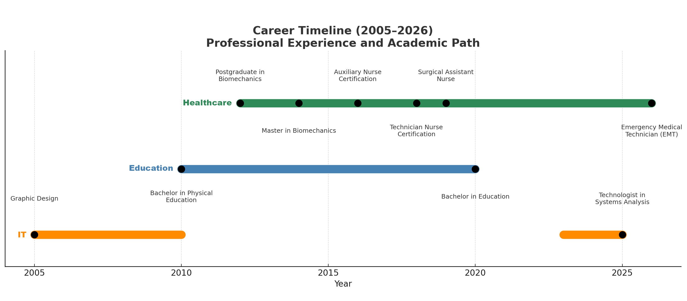

Hi, I'm Dan. I hold a Master’s degree in Physical Education and a Postgraduate Diploma in Biomechanics. I’m also a qualified Nurse Technician and Surgical Nurse with experience in hospitals and care homes across Brazil, Ireland, and Portugal. Alongside my work in the healthcare field, I’m currently developing digital projects through LuxSolutions.tech, focused on innovation and technology for health and care services. The chart above outlines my professional journey, while the sections below provide more details about each area: IT & Development, Nursing, and Education.